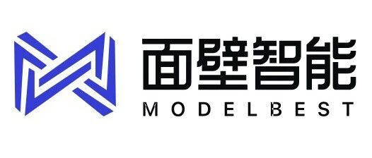
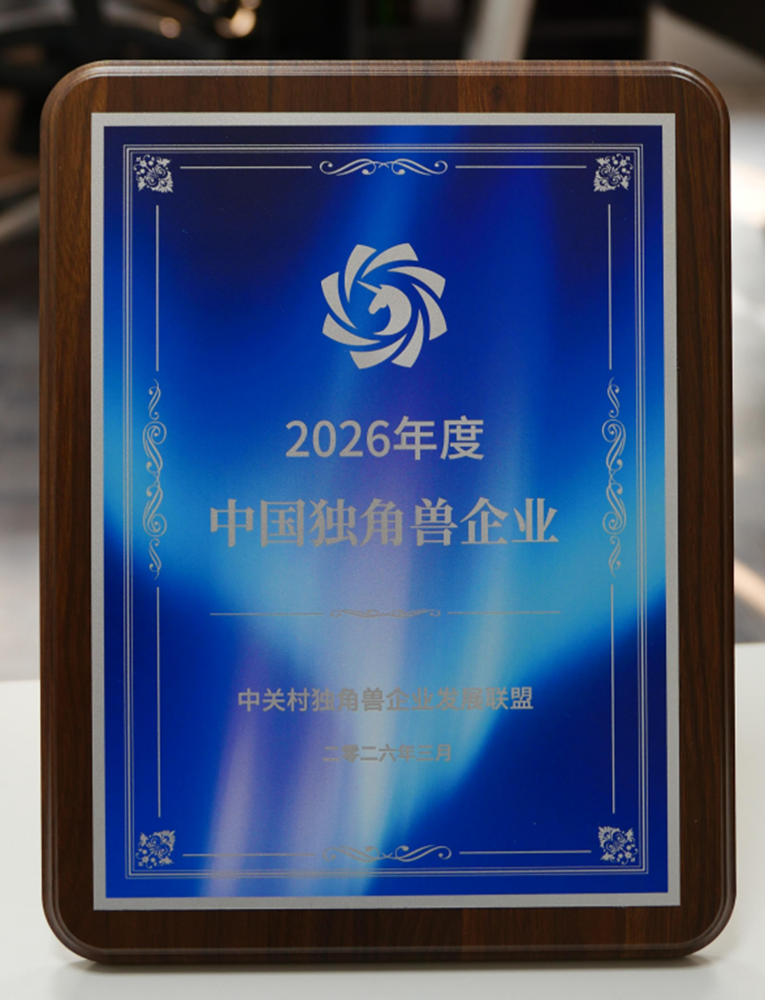

近日，和基投资已投企业面壁智能完成新一轮数亿元人民币融资，由深圳市创新投资集团（深创投）和汇川产投联合领投，道禾长期投资、国泰君安创新投、武岳峰科创等跟投。
就在本轮融资落地的同期，面壁智能在 2026 年中关村论坛年会「全球独角兽企业大会」上正式获颁「2026 年度中国独角兽企业」称号。融资与荣誉的双重落定，共同标注了面壁智能在端侧大模型赛道上的阶段性高度——这既是对过去三年技术积累与商业落地的集中确认，也是面壁智能迈向下一阶段的新起点。
支撑这轮融资的，是面壁智能过去三年在端侧赛道上扎实跑出来的成绩。
面壁智能践行的“密度法则”——在有限算力下持续提升模型知识密度——已成为行业广受认可的端侧演进路径。MiniCPM 系列开源模型在 GitHub、Hugging Face 等平台累计下载量已突破 2400 万，在汽车、智能手机、AIPC、智能家居等领域实现规模化落地。长安马自达 EZ-60、吉利银河 M9 等车型均已搭载 MiniCPM 多模态模型量产上市，面壁智能也已与多家全球头部手机厂商建立深度合作，更多终端场景的项目正在持续推进。今年中关村论坛上，智能座舱、EdgeClaw Box 龙虾盒子、具身服务机器人三款产品的集中亮相，正是这张商业版图最新的集中呈现。
与此同时，面壁智能也在持续拓宽端侧 AI 的能力边界。最新发布的 MiniCPM-o 4.5 行业首个全双工全模态大模型，以 9B 的精简体量实现了语音、视频、文本的全模态同步交互，是公司在“提升智能密度”方向上的又一突破。面向具身智能领域，全模态实时感知与自主决策能力的结合，将为下一代机器人大脑提供更自然、更具泛化性的交互底座——这是面壁智能正在打开的下一扇门。
面壁智能 CEO 李大海表示：“AGI 的长跑已经进入中段。在算力约束下持续提升智能密度、真正在物理世界落地，是面壁一直以来坚持的方向，也得到了深创投、汇川技术和这一轮所有投资方最坚定的支持。面壁将继续以密度法则为第一性原理，坚持开源，让每一个终端都拥有通向 AGI 的能力。”